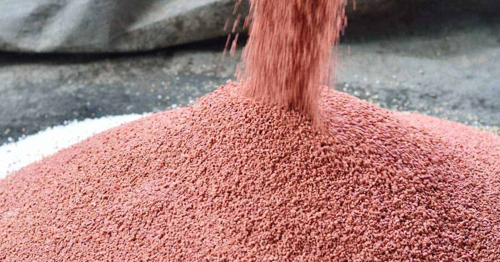
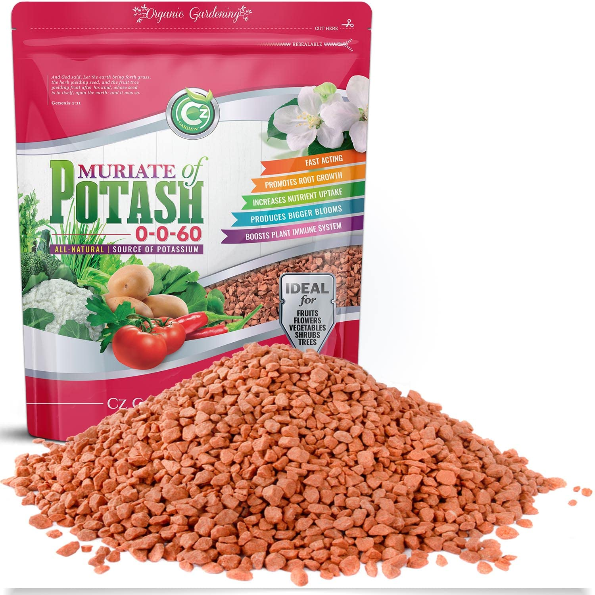
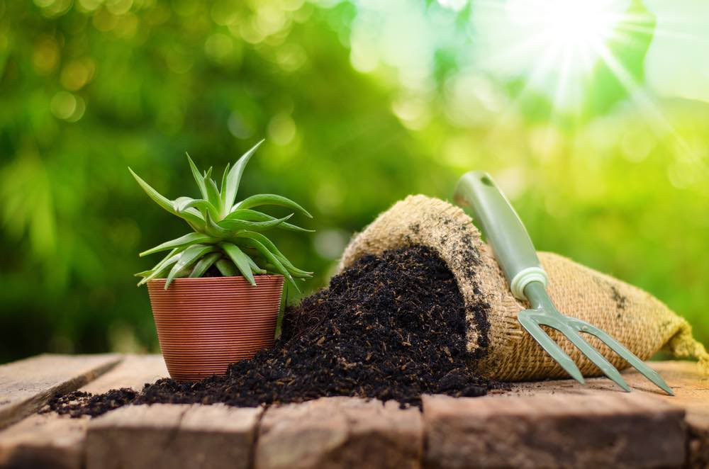
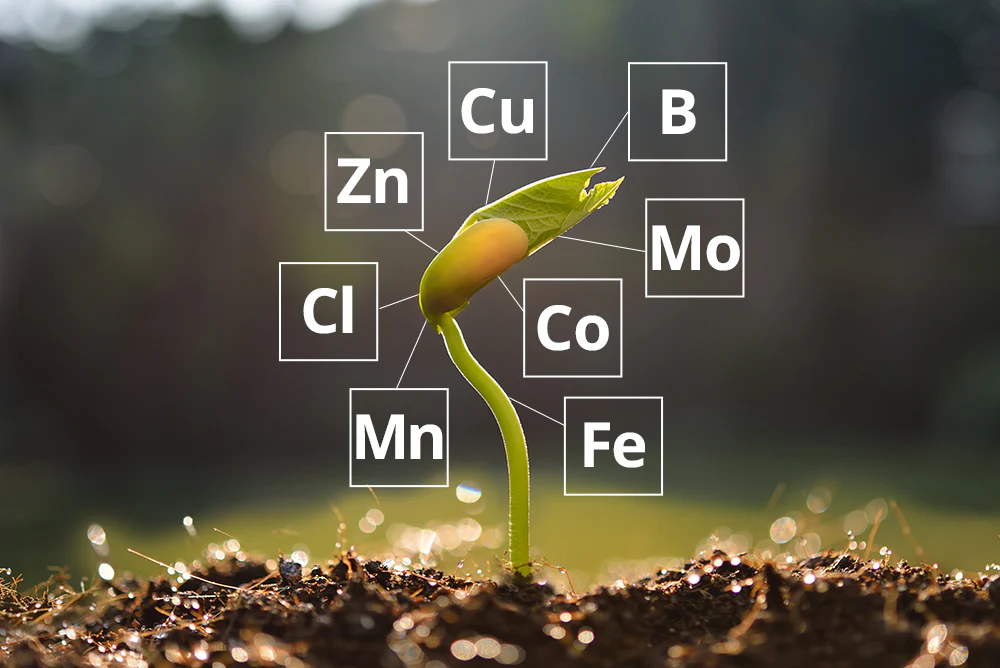
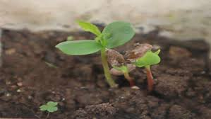

Agricultural Machines

Harrow
A harrow for breaking up and smoothing out the surface of the soil.

Plough
A traditional plough for turning over soil before planting.
Fertilizers

Phosphorus Fertilizer
Phosphorus-based fertilizer for strong roots and abundant flowers.

Potassium Fertilizer
Potassium-rich fertilizer for improved plant health and disease resistance.

Organic Fertilizer
Natural organic fertilizer for environmentally-friendly farming.

Micronutrient Fertilizer
Essential micronutrients for balanced plant nutrition.
Plants and Seeds

Apple Tree Sapling
Hardy apple tree saplings for orchards.

Soybean Seeds
Nutrient-rich soybean seeds for diverse agricultural needs.